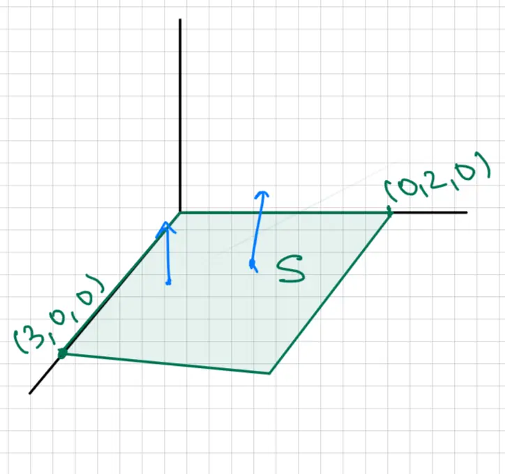

Lesson 34: Stokes Theorem - I (17.7)
Review example: Evaluate \(\iint_S \vec{F} \cdot d\vec{S}\), where \(\vec{F} = 4\vec{k} = \langle 0, 0, 4 \rangle\) and \(S\) is the rectangle in the \(xy\)-plane.
\[ \iint_S \vec{F} \cdot d\vec{S} = \iint_S \vec{F} \cdot \vec{n} \, dS \]
Convention: The unit normal vector \(\vec{n}\) should point up or outward.

Visual Description:
A 3D coordinate system with x, y, and z axes. A green shaded rectangular surface labeled S lies in the xy-plane. The rectangle's boundaries are defined by its vertices, including (3, 0, 0) on the x-axis and (0, 2, 0) on the y-axis. Two blue arrows, representing the unit normal vector n, point vertically upwards from the surface S in the positive z-direction.
In the \(xy\)-plane \(\Rightarrow z = 0\).
The unit normal vector is \(\vec{n} = \vec{k} = \langle 0, 0, 1 \rangle\).
\[ \iint_S \vec{F} \cdot d\vec{S} = \iint_S \vec{F} \cdot \vec{n} \, dS = \iint_S 4 \, dS \]
\[ = 4 \iint_S 1 \, dS \]
\[ = 4 \times \text{Area}(S) \]
\[ = 4 \times 6 = 24 \]
Suppose \(\vec{G} = 7\vec{j} = \langle 0, 7, 0 \rangle\), then:
\[ \iint_S \vec{G} \cdot d\vec{S} = \iint_S \vec{G} \cdot \vec{n} \, dS = 0 \] (Since \(\vec{G} \cdot \vec{n} = \langle 0, 7, 0 \rangle \cdot \langle 0, 0, 1 \rangle = 0\))![A diagram illustrating the parameterization of a surface. On the left, a 2D coordinate system with axes labeled u and v contains a blue-outlined region R. A red arrow labeled r(u, v) points from region R to a green-shaded surface S in a 3D coordinate system (represented by a vertical z-axis) on the right. A purple normal vector n is shown pointing outward from the surface S. Next to surface S, the formula for the unit normal vector is given as \vec{n} = \pm \frac{(r_u \times r_v)}{|r_u \times r_v|}.](img/lesson-34-2.webp)

![A technical diagram illustrating an oriented surface S and its boundary curve C. The surface S is shown as a 3D dome-like shape with purple diagonal hatching. A blue arrow points vertically upwards from the surface, representing the positive unit normal vector field. The boundary of this surface is a closed green curve C at the base. A green arrow on curve C indicates a counter-clockwise orientation when viewed from above, which is consistent with the right-hand rule relative to the upward-pointing surface normal.](img/lesson-34-4.webp)


![A 3D coordinate system diagram illustrating the setup for Stokes' Theorem. It shows a three-dimensional hemispherical surface labeled \( S \), shaded with pink diagonal lines, and several blue arrows representing normal vectors pointing outwards. The base of the dome is a horizontal boundary curve labeled \( C \), shown in green. The coordinate system includes a vertical z-axis and two horizontal axes (x and y). The curve \( C \) is situated above the xy-plane, representing the intersection of the sphere and a horizontal plane.](img/lesson-34-8.webp)

![A 3D coordinate diagram illustrating the relationship between two surfaces sharing the same boundary curve for the application of Stokes' Theorem. A purple dome-shaped surface, labeled S, rises from the xy-plane into the positive z-direction. Its base is a green closed curve, labeled C, which lies entirely in the xy-plane. Several blue arrows represent the outward-pointing normal vectors of surface S. Within the same green boundary curve C, a second surface labeled S2 is shown as a flat, red-hashed disk lying in the xy-plane. The z-axis is indicated by a vertical blue arrow, and the x and y axes are represented by black lines.](img/lesson-34-10.webp)